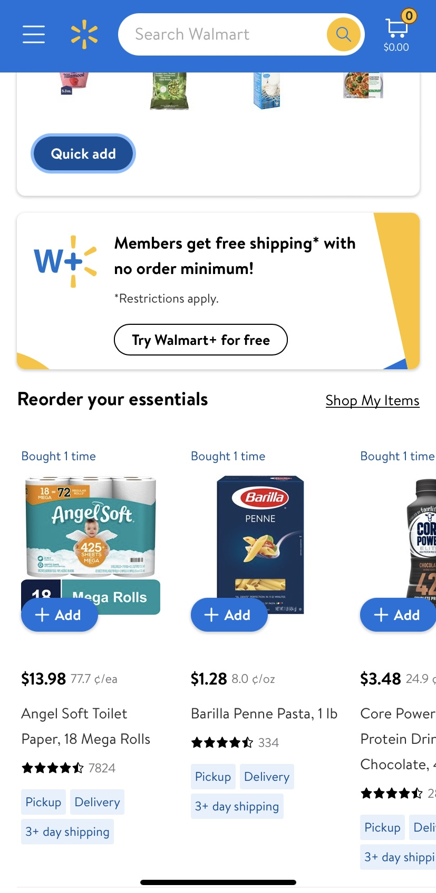
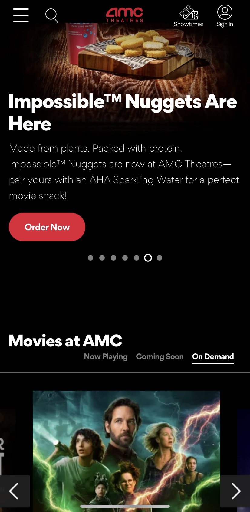
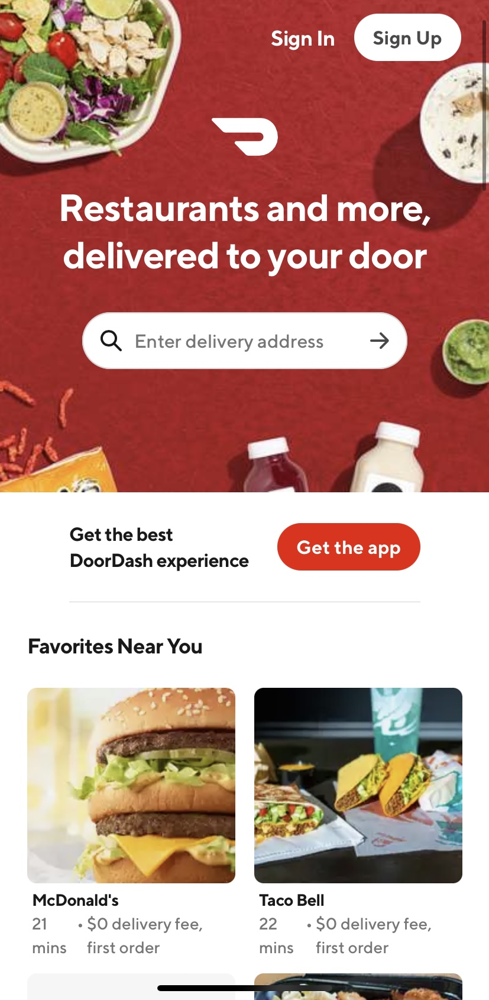

Repititon
Walmart
Repetition is used very well in this site. The blue and yellow company colors are used throughout the page. The same blue that is used in the header is also seen in buttons and advertisement. The yellow is used similarly. Another element that is repeated well is the the drop shadow used to emphasize different sections. The same font is also used throughout the site.
Contrast
AMC Theatres
Contrast is used well in this site. White text and icons against black bakcgrounds allows for the information to be clear and easy to find and read. The red buttons also contrast well against the black background making it clear where interactions can be made.
Hick's Law
DoorDash
Hick's Law is about making choices easier for the user. I think DoorDash does this very well for the user. When you first pull up the website you can immediatly put in your delivery address which will allow you to see what is near you. Another way they help make decisions easier is by showing a few popular restaurants near your current zip code. The key word is a few. I'm sure there are more than 6 favorites around here but if they showed all 20 restaurants that people liked it would be overwhelming for the user. As you continue to scroll you can see information is simplified and made easily accessible.